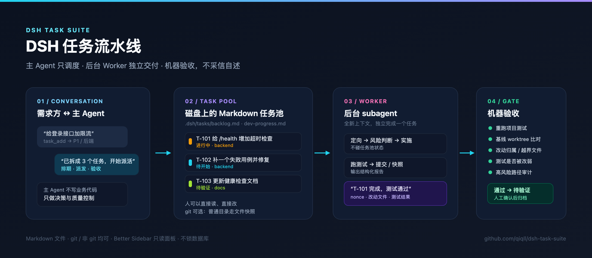
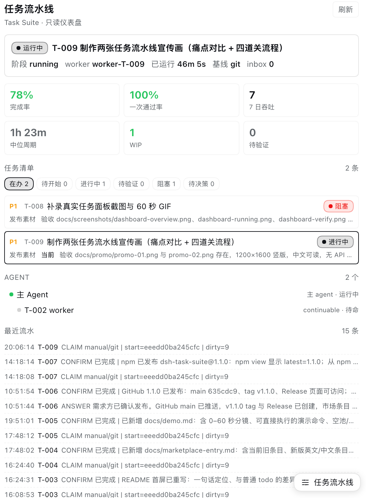

主 Agent 只调度，后台 Agent 交付，机器验收后才算完成。需求变成任务，交互变成异步，进度变成一屏可见。
dsh plugin --profile desktop add dsh-task-suite

不是模型不够聪明，是工作方式还停留在助理模式：你盯、你等、你验收，它负责“说完成”。
它做一件，你看一件；想到下一个需求，也得等它空下来。
测试跑没跑、改动越没越界、测试有没有被改弱，全靠它自己说。
当前在做什么、什么卡住了、还剩多少，翻聊天记录才能猜。
不是把多 Agent 包装成新概念，而是把“管理一个团队”的最小闭环，做进插件里。
主 Agent 只做 Tech Lead：对话、拆解、调度、验收；每个任务交给独立上下文的 subagent。它是团队里的负责人，worker 是工程师。
每个需求都有 ID、优先级、验收标准和状态。任务池是可读写的 Markdown，不是锁在数据库里的黑盒。
需求可以一次投递多条，进入任务池按序消化。你不必和 Agent 保持同频，想到什么先扔进去。
任务、Agent、指标、事件流一屏可见。当前在做什么、什么卡住、什么待确认，一眼看清。
你投递的是需求，不是 prompt。流水线把它变成一个有证据的交付。
主 Agent 把需求拆成任务，写清验收标准、优先级和依赖。
主 Agent 从池子里挑任务，派给全新上下文的后台 worker。
worker 定向、实施、跑测试、提交或存快照，返回结构化报告。
机器重跑测试、比对基线、审计改动；通过后待验证，由你确认归档。
有测试的项目走机器门禁；没有测试的项目也有人工确认和改动审计。最终归档权始终在你手里。

没有任务契约、验收门禁和可见性，多 Agent 只是把混乱并行化。
| 维度 | 普通多 Agent / 助理 | DSH 任务流水线 |
|---|---|---|
| 工作单位 | 一段对话、一个 prompt | 有 ID、验收标准和状态的任务 |
| 谁干活 | 主 Agent 自己，或临时派发 | 独立上下文的 worker，主 Agent 只调度 |
| 完成标准 | worker 自己说完成 | 机器重跑测试 + 基线比对 + 人确认 |
| 交互方式 | 同步等待，一次一件 | 需求先入池，按流水线异步消化 |
| 过程可见 | 翻聊天记录 | 任务 / Agent / 指标 / 事件流一屏可见 |
| 存储 | 依赖会话或 SaaS | 磁盘上的 Markdown，git 可选 |
需要已安装 DeepSeek Harness。首次安装后完整重启一次，让客户端面板加载。
dsh plugin --profile desktop add dsh-task-suite桌面版 profile 通常是 desktop；Web 版换成 web，或换成你实际使用的 profile 名。
退出应用再打开。只刷新页面不会加载客户端面板。
进入会话，从右侧栏 + 菜单或右下角「任务流水线」打开面板；任务工具会出现在会话里。
先 task_init，再 task_add，然后 task_loop action=start。完整命令见 GitHub README。
# 从 GitHub 源码安装（可选）
dsh plugin --profile desktop add qiqll/dsh-task-suite
# 已经装过？先看版本
npm view dsh-task-suite versionnpm 页面：npmjs.com/package/dsh-task-suite
插件市场：awesome-dsh-plugin（条目 PR 合并后生效）
GitHub：github.com/qiqll/dsh-task-suite
task_init
task_add items=[{title: "给登录接口加限流", module: "backend", priority: "P1", acceptance: "pytest tests/test_auth.py 通过"}]
task_loop action=start max=3 hours=2
task_loop action=tick同时推进多个任务、被“假完成”坑过、想让交付过程可审计的开发者和小团队；已经在用 DeepSeek Harness。
只想要简单 todo、一次性脚本、完全不需要验收的个人项目；或者期待零人工、自动合并上线的团队。
普通 todo 只记录“要做什么”；这里记录“谁做、做到什么程度算完成、拿什么证据验收”。任务有状态机、验收标准、机器门禁和归档流程。
不是。能跑测试命令的项目走机器验收；没有测试的项目仍有人工确认、改动审计和文件快照，不会假装“自动通过”。
“异步”指需求投递和交互异步：你可以一次投多条，不必等一条做完再提下一条。实际执行由流水线按序调度，默认同一时刻一个当前任务，避免并发写坏工作区。
不必须。git 仓库用 commit / worktree 做归因和基线；普通目录自动降级为文件快照，任务池和验收流程仍然可用。
是。面板负责看见，不负责操作；任务操作仍然通过 task_* 工具完成，避免在 UI 上误触状态。